Nombre de poissons : 19
Nombre d'échographies transversales : 70
Nombre d'écho transversales moyennes par poisson : 3.68
Nombre d'échographies longitudinales : 58 (dont 49 non vides)
Nombre d'oeufs : 331Résultats sur l’échantillon d’évaluation
Rappels échantillon de validation
Vrai annotations
Prédictions
Nombre de poissons : 19
Nombre d'échographies transversales : 70
Nombre d'écho transversales moyennes par poisson : 3.68
Nombre d'échographies longitudinales : 58 (dont 54 non vides)
Nombre d'oeufs : 570Volumes et fécondité par poisson
| id poisson | image_id | echelle | volume_cavite_pred | volume_gonade_pred | volume_moyen_oeufs_mm3_pred | volume_cavite_true | volume_gonade_true | volume_moyen_oeufs_mm3_true | poids_poisson | long_poisson | age_poisson | fecondite_pred | fecondite_true | |
|---|---|---|---|---|---|---|---|---|---|---|---|---|---|---|
| 0 | 356302 | 0004575 | 3.1 | 6.935185 | 3.786609 | 9.105874 | 4.269466 | 1.585980 | 4.201180 | 65.6 | 176 | None | 415.842483 | 377.508214 |
| 1 | 356418 | 0004585 | 3.8 | 13.846521 | 8.681324 | 22.978475 | 8.699849 | 5.726512 | 8.717891 | 95.7 | 205 | 2+ | 377.802455 | 656.868931 |
| 3 | 356434 | 0004596 | 3.8 | 17.390583 | 10.029546 | 16.596393 | 11.473188 | 7.174567 | 6.551308 | 116.3 | 212 | None | 604.320819 | 1095.135040 |
| 4 | 356859 | 0004646 | 3.8 | 10.498520 | 4.407175 | 19.794373 | 6.613133 | 3.677799 | 7.892139 | 126.0 | 230 | 2+ | 222.647877 | 466.007906 |
| 5 | 356868 | 0004650 | 3.8 | 14.927029 | 7.352544 | 23.622663 | 8.886835 | 5.234275 | 8.887766 | 85.8 | 202 | 2+ | 311.249560 | 588.930377 |
| 6 | 356877 | 0004656 | 3.8 | 3.494402 | 1.609309 | 0.000000 | 2.116932 | 1.112477 | 2.365129 | 39.1 | 147 | 1+ | NaN | 470.366156 |
| 7 | 356918 | 0004663 | 3.8 | 9.295572 | 1.923984 | 23.745659 | 6.104026 | 1.017180 | 2.595472 | 62.1 | 163 | 1+ | 81.024659 | 391.905598 |
| 8 | 356948 | 0004671 | 3.8 | 16.582842 | 9.113513 | 16.144225 | 10.477818 | 5.458090 | 8.229970 | 116.5 | 225 | 2+ | 564.506066 | 663.196865 |
| 10 | 357291 | 0004723 | 3.8 | 18.409267 | 10.441528 | 22.642843 | 11.737027 | 6.566575 | 11.682126 | 155.4 | 242 | 3+3 | 461.140348 | 562.104407 |
| 11 | 357302 | 0004729 | 3.8 | 2.676881 | 0.857316 | 15.289752 | 1.671312 | 0.546105 | 4.382301 | 31.2 | 137 | 1+ | 56.071300 | 124.615969 |
| 12 | 357305 | 0004733 | 3.8 | 8.497277 | 3.939657 | 25.998448 | 5.428373 | 2.406470 | 9.509914 | 74.7 | 185 | 1+ | 151.534320 | 253.048588 |
| 33 | 426729 | 0006938 | 3.8 | 10.928271 | 5.106240 | 15.261569 | 7.200584 | 3.744806 | 8.484912 | 97.1 | 203 | None | 334.581589 | 441.348749 |
| 34 | 426735 | 0006946 | 3.1 | 6.615566 | 3.526228 | NaN | 4.214518 | 1.831105 | NaN | 81.8 | 191 | None | NaN | NaN |
| 35 | 426770 | 0006953 | 3.8 | 13.594660 | 8.204158 | 18.451144 | 8.870822 | 4.447284 | 9.320582 | 120.0 | 221 | None | 444.642232 | 477.146630 |
| 36 | 427181 | 0007099 | 3.8 | 33.857005 | 19.185743 | 22.887453 | 22.676348 | 13.759359 | 10.115265 | 284.5 | 295 | None | 838.264656 | 1360.256909 |
| 37 | 427184 | 0007106 | 3.1 | 18.246590 | 8.637305 | 10.922606 | 12.120825 | 5.789347 | 5.870849 | 245.4 | 288 | 2+ | 790.773350 | 986.117504 |
| 41 | 427266 | 0007139 | 3.8 | 10.945710 | 6.782920 | 18.685644 | 6.939388 | 4.305429 | 4.965432 | 94.1 | 208 | 1+ | 363.001669 | 867.080484 |
| 42 | 427276 | 0007150 | 3.8 | 18.602105 | 8.685207 | NaN | 11.408657 | 4.243235 | NaN | 188.4 | 258 | None | NaN | NaN |
| 43 | 427305 | 0007156 | 3.8 | 6.369375 | 0.000000 | 24.297770 | 4.839770 | 3.782932 | 22.274521 | 82.0 | 213 | 2+2 | 0.000000 | 169.832234 |
Vérification des surfaces des gonades et de la cavité - Annotations
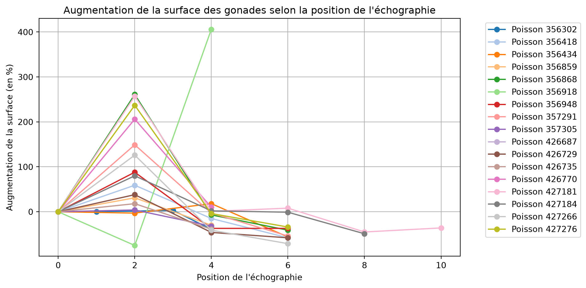

Vérification des surfaces des gonades et de la cavité - Prédictions
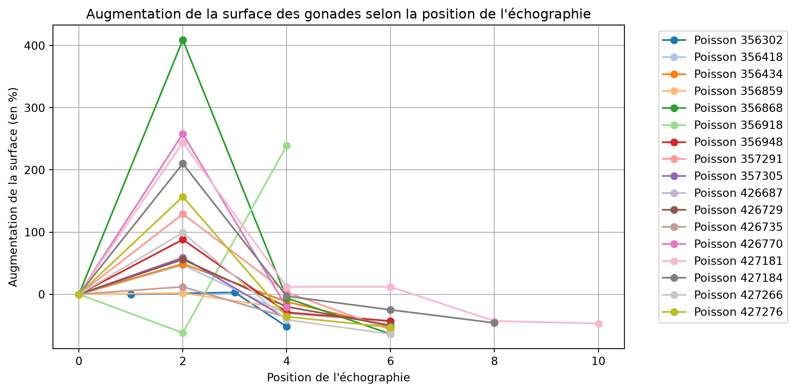
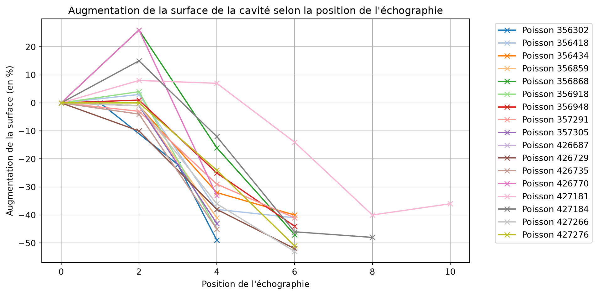
Détection des anomalies selon l’augmentation de la surface
Pred - Poisson : 356918 - Problèmes : [0, 1, 1]
Pred - Poisson : 356918 - Problème sur l'écho à la position 2.0 (diminution surface gonade : -62.0%)
True - Poisson : 356918 - Problèmes : [0, 1, 1]
True - Poisson : 356918 - Problème sur l'écho à la position 2.0 (diminution surface gonade : -75.0%)
Pred - Poisson : 427181 - Problèmes : [0, 0, 1, 1, 0, 0]
Pred - Poisson : 427181 - Problème sur l'écho à la position 4.0 (diminution surface gonade : 12.0%)Relations entre surfaces des gonades et de la cavité - Annotations
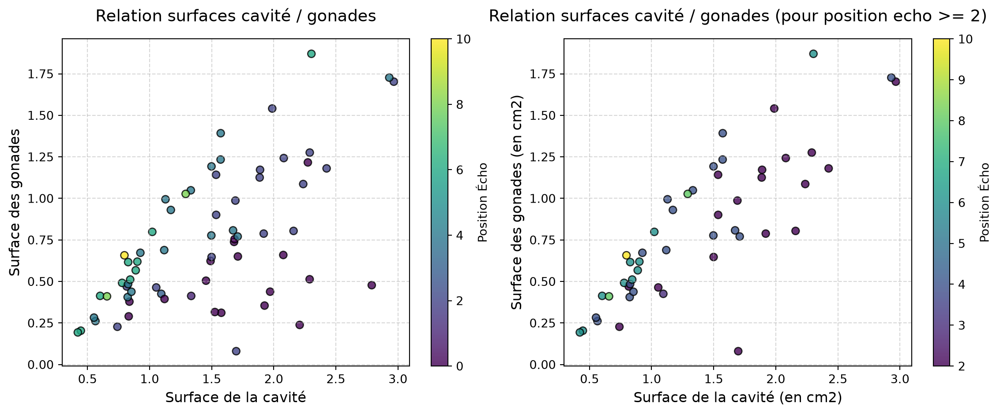
Corrélation : 0.61
Corrélation (pour position echo >= 2) : 0.82Relations entre surfaces des gonades et de la cavité - Prédictions

Corrélation : 0.64
Corrélation (pour position echo >= 2) : 0.82Distribution du volume des gonades
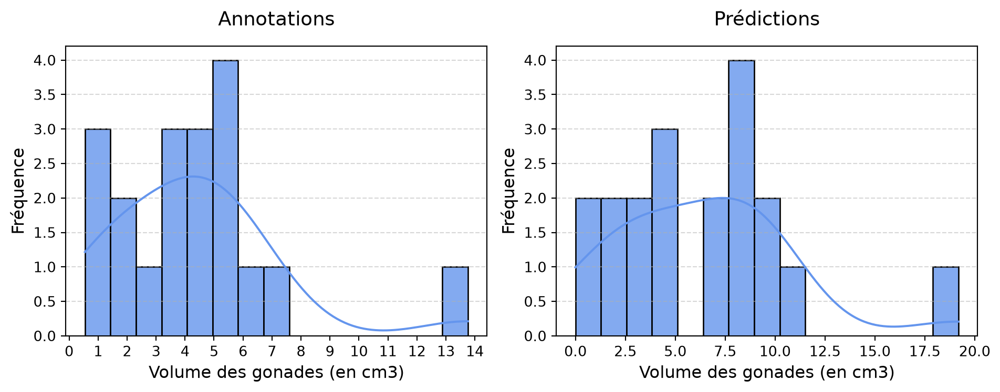
Relations entre le volume des gonades et le poids des poissons
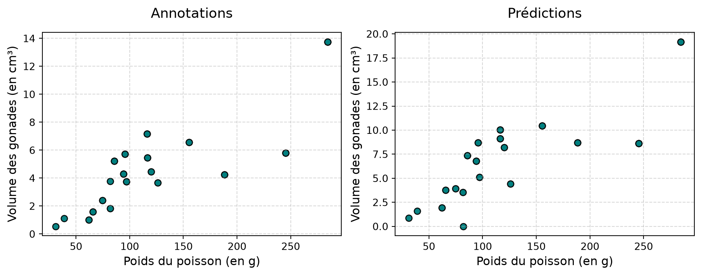
Corrélation annotations : 0.82
Corrélation prédictions : 0.83Relations entre le volume des cavités et le poids des poissons
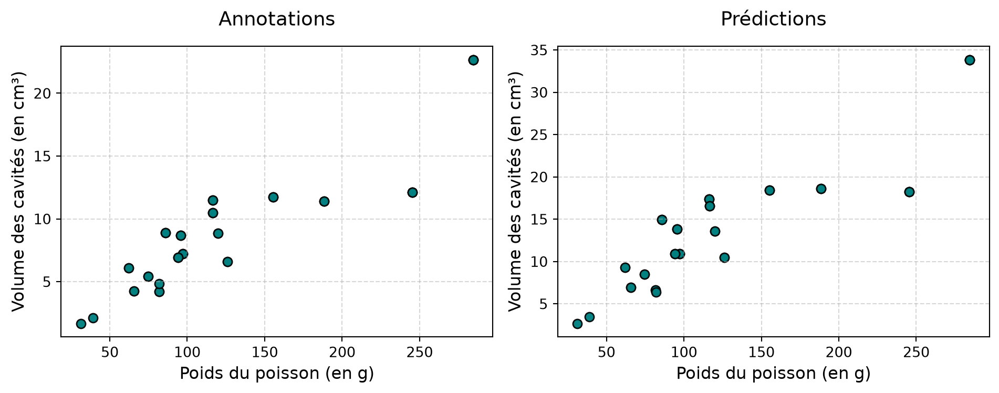
Corrélation Annotations : 0.90
Corrélation prédictions : 0.89Distribution du volume des oeufs
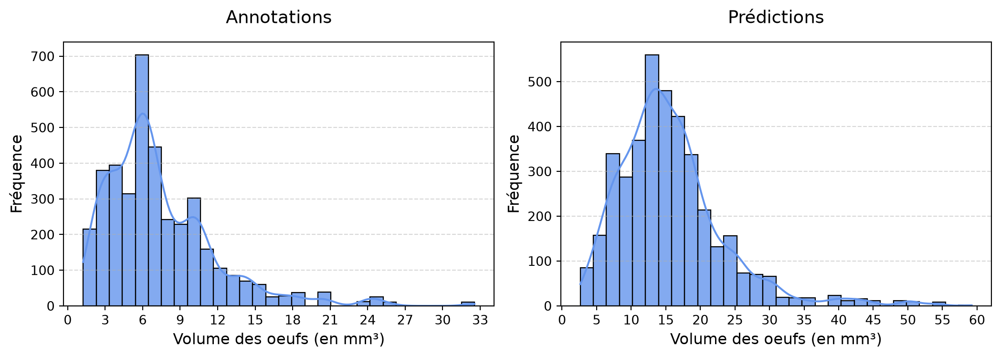
Distribution du nombre d’œufs par échographie
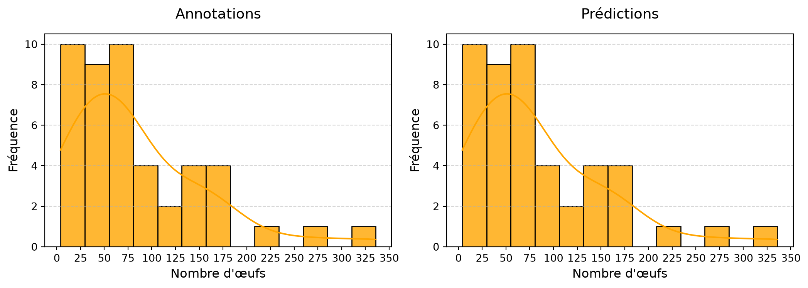
Nombre moyen d'œufs par échographie : 84.63 (Q1 : 40, Q3 : 124)Annotations
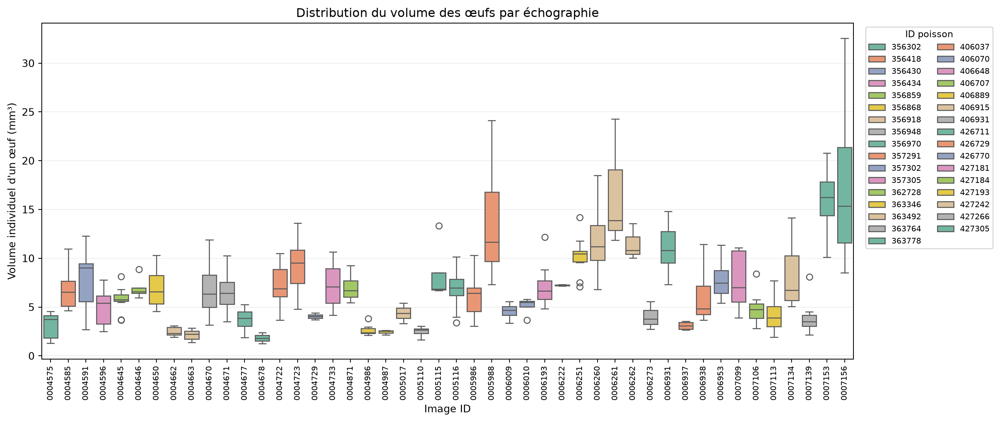
Prédictions
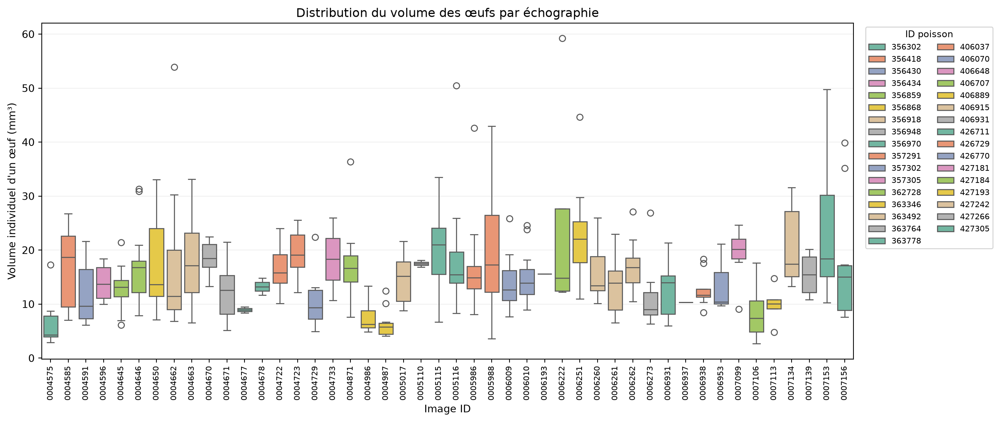

Relation entre le volume des oeufs et les caractéristiques des poissons
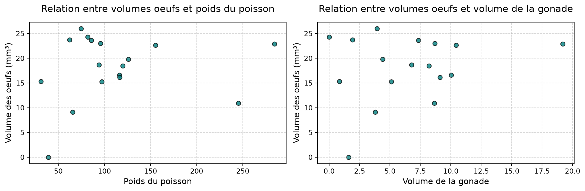
Corrélation oeufs / gonade : 0.2240322766190853
Corrélation oeufs / poids : 0.15329090574701912Distribution de la fécondité
Nombre de poissons avec une fécondité calculable : 16 sur 19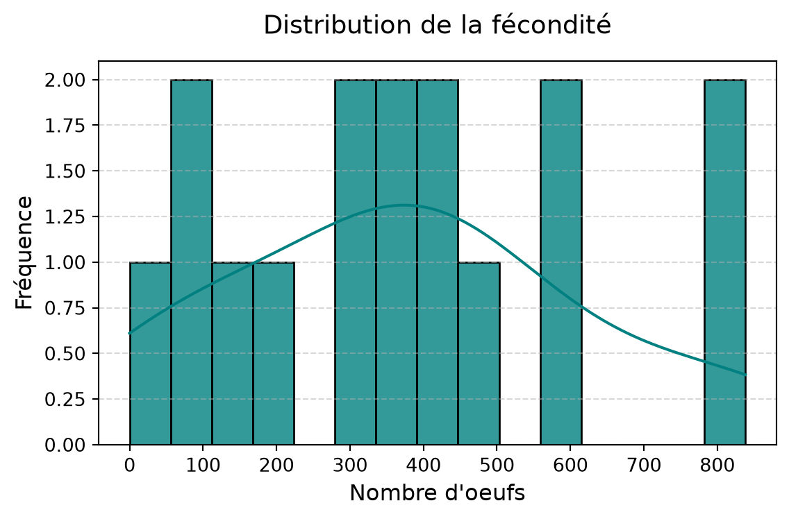
Relations entre la fécondité et les caractéristiques des poissons
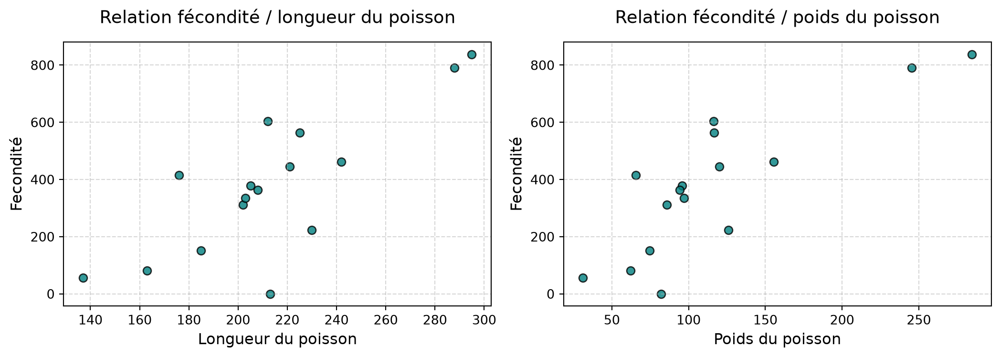
Corrélation fécondité / longueur : 0.7868238483587474
Corrélation fécondité / poids : 0.8309294203369926